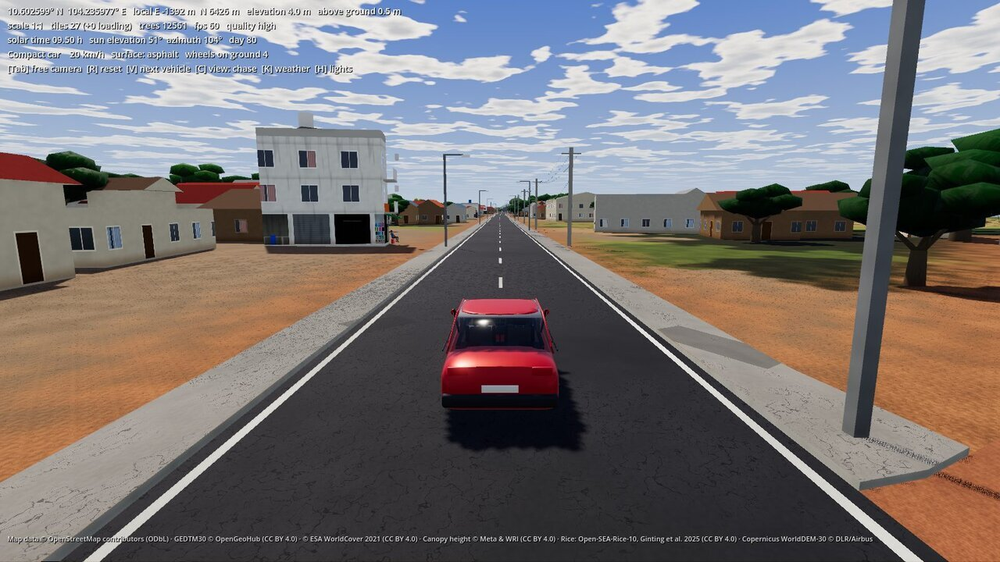

phlov
A driving simulation of a car or a motorcycle anywhere in Cambodia, at full scale, on a PC or an Android phone. phlov is a fork of Angkor World Engine, with its whole history: it keeps the engine, the geographic pipeline and the Angkor region, and takes them out of Angkor. A region can now be made along any road of the country, from open geographic data fetched for it alone; and GoPro footage of that road is to tell the engine what the roadside really looks like — the kind of houses, the trees, the walls and power lines, the road surface, the colours of the facades. The first corridors run from Kampot to Kep and from Kampot to Kampong Trach.
Une simulation de conduite en voiture ou à moto partout au Cambodge, en grandeur réelle, sur PC ou sur un téléphone Android. phlov est un fork d’Angkor World Engine, avec tout son historique : il en garde le moteur, le pipeline géographique et la région d’Angkor, et les fait sortir d’Angkor. Une région peut désormais être construite le long de n’importe quelle route du pays, à partir de données géographiques ouvertes téléchargées pour elle seule ; et les vidéos GoPro de cette route doivent dire au moteur à quoi ressemblent vraiment ses abords — le type de maisons, les arbres, les murs et les lignes électriques, le revêtement, les couleurs des façades. Les premiers corridors vont de Kampot à Kep et de Kampot à Kampong Trach.
ការក្លែងធ្វើការបើកបររថយន្ត ឬម៉ូតូ គ្រប់ទីកន្លែងក្នុងប្រទេសកម្ពុជា តាមទំហំពិត លើកុំព្យូទ័រ ឬទូរស័ព្ទ Android។ phlov គឺជា fork នៃ Angkor World Engine ជាមួយប្រវត្តិទាំងមូលរបស់វា៖ វារក្សាម៉ាស៊ីន កម្មវិធីរៀបចំទិន្នន័យភូមិសាស្ត្រ និងតំបន់អង្គរ ហើយនាំវាចេញពីអង្គរ។ ឥឡូវនេះ តំបន់មួយអាចត្រូវបានបង្កើតតាមបណ្តោយផ្លូវណាមួយក្នុងប្រទេស ពីទិន្នន័យភូមិសាស្ត្របើកចំហ ដែលទាញយកសម្រាប់តែតំបន់នោះ ហើយវីដេអូ GoPro នៃផ្លូវនោះ នឹងប្រាប់ម៉ាស៊ីនថា តាមមាត់ផ្លូវពិតជាមានរូបរាងយ៉ាងណា — ប្រភេទផ្ទះ ដើមឈើ របង និងខ្សែភ្លើង ផ្ទៃផ្លូវ និងពណ៌នៃមុខផ្ទះ។ ច្រករបៀងដំបូងៗ ចាប់ពីកំពតទៅកែប និងពីកំពតទៅកំពង់ត្រាច។

Any road, as it is.
Angkor World Engine rebuilds one region, Angkor, in great detail. phlov asks another question: can the same engine put you on any road in Cambodia and have it look like that road? Open data gives the geometry almost everywhere — the roads, the footprints of the buildings, the terrain, the trees, the fields. What it does not give is the look of a place: whether the houses stand on wooden or concrete stilts, whether the roadside has walls, palms or rice, whether the road is asphalt or laterite. That is what a camera on a scooter sees, so phlov reads it from GoPro footage of the road, every 25 metres and on each side.
The fork was made on 27 and 28 November 2026 with angkor’s whole history and an upstream remote that cannot be pushed to: corrections go both ways with git cherry-pick. phlov has its own name, window and Android package, and a phlov command that stands for angkor’s awe; it reads the datasets angkor has already downloaded in place, without copying them. Angkor Wat, baked by both from the same files, comes out byte for byte the same: all 39 tiles.
Five steps, each run on the PC and the phone.
The project is planned in five steps. Nothing is marked done unless it runs and has been checked, and every step ends with a run on the PC and on a Samsung Galaxy A56.
| Step | What it is | State on 28 November 2026 |
|---|---|---|
| 0 · The repository | The fork, its identity, the phlov command, angkor’s sources read in place | Done: the APK installed and run on the A56 |
| 1 · Video to position | From a GoPro recording to the position of each of its frames on the map | Built, tested on synthetic footage and GoPro’s published samples; the acceptance test — five places within 30 m on a real ride — is still to do |
| 2 · Scenery inventory | What the roadside holds, every 25 m and on each side, read from the frames | Built, run on the graphics chip; its precision is not measured yet |
| 3 · The engine places it | Open data for the geometry, the inventory for the appearance | Started: buildings beyond OpenStreetMap, places, the inventory in the bake (with a synthetic one); the phone’s budget met |
| 4 · Anywhere in Cambodia | Regions as files, by a box or along a route, with their own datasets and grid | Done: two corridors at Kampot baked and driven, one inside Angkor at Siem Reap |
A corridor along the road.
A region is a box, or a corridor along a route — by default a kilometre each side. phlov region route finds the shortest road route between two places on the OpenStreetMap extract; a filmed trajectory can be used instead. The datasets the region needs are worked out from its extent and fetched on demand, each window with its provenance: Copernicus GLO-30 and GEDTM30 for the ground, ESA WorldCover, Meta and WRI’s canopy height, Open-SEA-Rice-10 and Wikidata. Each region gets its own local grid, a transverse Mercator centred on it, written once and never moved, and only the tiles that come within the corridor are baked.
A long route is cut into sections of 25 km at most, each with its own windows of every dataset: Siem Reap to Phnom Penh would otherwise have meant a box of some 23,000 km² around a corridor of about 630. The import keeps only what lies within reach of the route.
| Region | Route | In the world |
|---|---|---|
| Kampot → Kep | National Road 33, 25.8 km, one section | 95 tiles; 39,854 buildings near the route; driven by car and motorcycle on the PC, 8.5 km on the A56 |
| Kampot → Kampong Trach | National Road 33, 36.2 km, two sections | 125 tiles; fetched in 6 min 47 s, imported in 1 min 42 s, baked in 5 min 20 s; validation with no error and no seam where the sections meet |
| Siem Reap, Old Market → Angkor Wat | 6.7 km, inside Angkor’s region | 16 tiles baked in 2 minutes on angkor’s own grid and database, so the town’s districts, street trees and lamps and the temple models are kept |
Buildings beyond OpenStreetMap. Outside Angkor the map is thinner, so the footprints of Overture Maps and Google Open Buildings v3 are fused in where OpenStreetMap has none, with heights from Google’s Open Buildings 2.5D Temporal. Overture’s and OpenStreetMap’s places put petrol stations, schools, market stalls and wats on the footprints they mark — placeholders for now, marked as such.
Where every frame was taken.
phlov video add reads a GoPro recording: its chapters grouped without re-encoding, the camera’s accelerometer, gyroscope and GPS from its GPMF track, a 720p copy made on the graphics chip, and frames at two a second, each with its exact time. Stops of two seconds or more are found in the picture, with the scooter’s hood masked. A trajectory editor in the browser shows a map beside the video, the two in step both ways: the start and end of the recording are snapped to roads, the shortest route is proposed and the roads taken are added with a click. A time-to-position model then spreads the distance over the moving time between anchors and matches the gyroscope’s turns to the route’s bends — on a simulated 3 km drive, the turns cut the largest error from 580 m to 97 m.
The GoPro used has no GPS receiver. For the next rides, a phone logs a GPS track while the GoPro films, and phlov video gps aligns the two, by the sound of a video filmed on the phone at the same time or by matching the gyroscope’s turns to the track’s: on a simulated five-minute ride along Kampot–Kep, 600 frames were placed 1.5 m from the truth at the median. A verification page shows a frame, where the model puts it and where it really was.
The footage stays private. Seven takes filmed at Angkor in September 2026 have been ingested; their frames are kept apart from the project’s own history, and none is published, on this page or anywhere else.
Twenty categories, each tied to the engine.
The inventory reads a frame every 25 m with three open models under the Apache 2.0 licence, run locally on the laptop’s graphics chip: SAM 2.1 cuts the picture into objects, SigLIP 2 names each one against the categories’ descriptions, and Depth Anything V2 says how far it is. The result is written for each side of the road in inventory.json, and a check page of 50 frames is there to measure its precision.
The list is fixed and changes only with the engine: a category exists only if the engine can place it. It holds houses on wooden or concrete stilts, shophouses, wats, market stalls, petrol stations and schools; sugar palms, coconut palms, bananas, rice, forest and scrub; power lines, walls and fences, ditches; asphalt and laterite; parked tuk-tuks and motorbikes. In the bake the inventory already drives the power lines, the front walls, the parked remorques, the houses on concrete stilts, the tree species, the road surfaces and the paint of the walls — checked so far with a synthetic inventory along Kampot–Kep, not yet with a real one.
The budget is met.
On 28 November 2026 a scripted ten-minute drive along Kampot–Kep, on the medium preset, from cold and on the charger, ran on the Galaxy A56 at 85.5 frames per second on average and 112 at the median, with 95 % of frames within 17.0 ms, no hitch over 100 ms and 903 MB of memory, its frame time steady from start to end. Warm and on battery it ran at 74 frames per second on average: the slowdown was heat. tools/a56_session.sh runs the whole session in one command — install, warm-up, benchmark and drive — and writes its figures into the project’s tracking page.
N’importe quelle route, telle qu’elle est.
Angkor World Engine reconstruit une région, Angkor, dans le détail. phlov pose une autre question : le même moteur peut-il vous mettre sur n’importe quelle route du Cambodge, et qu’elle ressemble à cette route ? Les données ouvertes donnent la géométrie presque partout — les routes, l’emprise des bâtiments, le terrain, les arbres, les champs. Ce qu’elles ne donnent pas, c’est l’allure d’un lieu : des maisons sur pilotis de bois ou de béton, des murs, des palmiers ou des rizières au bord de la route, de l’asphalte ou de la latérite. C’est ce que voit une caméra sur un scooter : phlov le lit donc dans les vidéos GoPro de la route, tous les 25 mètres et de chaque côté.
Le fork a été fait les 27 et 28 novembre 2026, avec tout l’historique d’angkor et un dépôt distant upstream sur lequel on ne peut pas pousser : les corrections passent dans les deux sens par git cherry-pick. phlov a son propre nom, sa fenêtre et son paquet Android, et une commande phlov qui remplace l’awe d’angkor ; il lit sur place les jeux de données qu’angkor a déjà téléchargés, sans les copier. Angkor Vat, précalculé par les deux à partir des mêmes fichiers, en sort identique octet par octet : les 39 tuiles.
Cinq étapes, chacune essayée sur PC et sur téléphone.
Le projet est prévu en cinq étapes. Rien n’est marqué fait sans tourner et avoir été vérifié, et chaque étape se termine par un essai sur PC et sur un Samsung Galaxy A56.
| Étape | Ce que c’est | État au 28 novembre 2026 |
|---|---|---|
| 0 · Le dépôt | Le fork, son identité, la commande phlov, les sources d’angkor lues sur place | Fait : l’APK installé et lancé sur l’A56 |
| 1 · De la vidéo à la position | D’un enregistrement GoPro à la position de chacune de ses images sur la carte | Construit, testé sur des vidéos synthétiques et les exemples publiés par GoPro ; l’essai de réception — cinq lieux à moins de 30 m sur un vrai trajet — reste à faire |
| 2 · L’inventaire du décor | Ce que contiennent les abords de la route, tous les 25 m et de chaque côté, lu sur les images | Construit, sur la puce graphique ; sa précision n’est pas encore mesurée |
| 3 · Le moteur le pose | Les données ouvertes pour la géométrie, l’inventaire pour l’apparence | Commencé : des bâtiments au-delà d’OpenStreetMap, les lieux, l’inventaire dans le précalcul (avec un inventaire synthétique) ; le budget du téléphone tenu |
| 4 · Partout au Cambodge | Des régions en fichiers, par une boîte ou le long d’un trajet, avec leurs propres données et leur grille | Fait : deux corridors à Kampot précalculés et parcourus, un à l’intérieur d’Angkor, à Siem Reap |
Un corridor le long de la route.
Une région est une boîte, ou un corridor le long d’un trajet — par défaut un kilomètre de chaque côté. phlov region route trouve le plus court chemin routier entre deux lieux sur l’extrait d’OpenStreetMap ; un trajet filmé peut servir à la place. Les jeux de données dont la région a besoin sont déduits de son étendue et téléchargés à la demande, chaque fenêtre avec sa provenance : Copernicus GLO-30 et GEDTM30 pour le sol, ESA WorldCover, la hauteur de canopée de Meta et du WRI, Open-SEA-Rice-10 et Wikidata. Chaque région a sa propre grille locale, une Mercator transverse centrée sur elle, écrite une fois et jamais déplacée, et seules les tuiles qui touchent le corridor sont précalculées.
Un long trajet est découpé en sections de 25 km au plus, chacune avec ses propres fenêtres de chaque jeu de données : de Siem Reap à Phnom Penh, il aurait sinon fallu une boîte d’environ 23 000 km² autour d’un corridor d’à peu près 630. L’import ne garde que ce qui se trouve à portée du trajet.
| Région | Trajet | Dans le monde |
|---|---|---|
| Kampot → Kep | Route nationale 33, 25,8 km, une section | 95 tuiles ; 39 854 bâtiments près du trajet ; parcouru en voiture et à moto sur PC, 8,5 km sur l’A56 |
| Kampot → Kampong Trach | Route nationale 33, 36,2 km, deux sections | 125 tuiles ; téléchargé en 6 min 47 s, importé en 1 min 42 s, précalculé en 5 min 20 s ; validation sans erreur et sans raccord visible là où les sections se rejoignent |
| Siem Reap, Vieux Marché → Angkor Vat | 6,7 km, à l’intérieur de la région d’Angkor | 16 tuiles précalculées en 2 minutes sur la grille et la base d’angkor, pour garder les quartiers de la ville, les arbres et les réverbères des rues et les modèles des temples |
Des bâtiments au-delà d’OpenStreetMap. Hors d’Angkor, la carte est plus maigre : les emprises d’Overture Maps et de Google Open Buildings v3 sont fusionnées là où OpenStreetMap n’en a pas, avec les hauteurs d’Open Buildings 2.5D Temporal de Google. Les lieux d’Overture et d’OpenStreetMap posent stations-service, écoles, étals de marché et pagodes sur les emprises qu’ils désignent — des modèles provisoires pour l’instant, signalés comme tels.
Où chaque image a été prise.
phlov video add lit un enregistrement GoPro : ses chapitres regroupés sans réencodage, l’accéléromètre, le gyroscope et le GPS de la caméra tirés de sa piste GPMF, une copie en 720p faite sur la puce graphique, et des images à deux par seconde, chacune avec son heure exacte. Les arrêts de deux secondes ou plus sont trouvés dans l’image, le capot du scooter masqué. Un éditeur de trajet dans le navigateur montre une carte à côté de la vidéo, les deux synchronisées dans les deux sens : le début et la fin de l’enregistrement sont accrochés aux routes, le plus court chemin est proposé et les routes empruntées s’ajoutent d’un clic. Un modèle temps → position répartit ensuite la distance sur le temps en mouvement entre les points d’ancrage et fait correspondre les virages du gyroscope aux courbes du trajet — sur un trajet simulé de 3 km, les virages ont ramené la plus grande erreur de 580 m à 97 m.
La GoPro utilisée n’a pas de récepteur GPS. Pour les prochains trajets, un téléphone enregistre une trace GPS pendant que la GoPro filme, et phlov video gps les cale l’une sur l’autre, par le son d’une vidéo filmée en même temps sur le téléphone ou en faisant correspondre les virages du gyroscope à ceux de la trace : sur un trajet simulé de cinq minutes le long de Kampot–Kep, 600 images ont été placées à 1,5 m de la vérité en médiane. Une page de vérification montre une image, l’endroit où le modèle la place et celui où elle a vraiment été prise.
Les vidéos restent privées. Sept prises filmées à Angkor en septembre 2026 ont été ingérées ; leurs images sont gardées hors de l’historique du projet, et aucune n’est publiée, ni sur cette page ni ailleurs.
Vingt catégories, chacune liée au moteur.
L’inventaire lit une image tous les 25 m avec trois modèles ouverts sous licence Apache 2.0, exécutés en local sur la puce graphique du portable : SAM 2.1 découpe l’image en objets, SigLIP 2 nomme chacun d’après les descriptions des catégories, et Depth Anything V2 dit à quelle distance il se trouve. Le résultat est écrit pour chaque côté de la route dans inventory.json, et une page de contrôle de 50 images sert à en mesurer la précision.
La liste est fixe et ne change qu’avec le moteur : une catégorie n’existe que si le moteur sait la poser. On y trouve les maisons sur pilotis de bois ou de béton, les compartiments chinois, les pagodes, les étals de marché, les stations-service et les écoles ; les palmiers à sucre, les cocotiers, les bananiers, les rizières, la forêt et les broussailles ; les lignes électriques, les murs et clôtures, les fossés ; l’asphalte et la latérite ; les tuk-tuks et les motos garés. Dans le précalcul, l’inventaire commande déjà les lignes électriques, les murs de façade, les remorques garées, les maisons sur pilotis de béton, les essences d’arbres, les revêtements et la peinture des murs — vérifié pour l’instant avec un inventaire synthétique le long de Kampot–Kep, pas encore avec un vrai.
Le budget est tenu.
Le 28 novembre 2026, un trajet scripté de dix minutes le long de Kampot–Kep, en préréglage moyen, à froid et sur le chargeur, a tourné sur le Galaxy A56 à 85,5 images par seconde en moyenne et 112 en médiane, avec 95 % des images en moins de 17,0 ms, aucun à-coup de plus de 100 ms et 903 Mo de mémoire, le temps par image stable du début à la fin. À chaud et sur batterie, il a tourné à 74 images par seconde en moyenne : le ralentissement venait de la chaleur. tools/a56_session.sh fait toute la séance en une commande — installation, mise en température, mesure et trajet — et en écrit les chiffres dans la page de suivi du projet.
ផ្លូវណាក៏បាន ដូចដែលវាមានពិត។
Angkor World Engine បង្កើតតំបន់មួយគឺអង្គរ ឡើងវិញយ៉ាងលម្អិត។ phlov សួរសំណួរមួយទៀត៖ តើម៉ាស៊ីនដដែលនេះ អាចដាក់អ្នកលើផ្លូវណាមួយក្នុងប្រទេសកម្ពុជា ហើយឱ្យវាមើលទៅដូចផ្លូវនោះពិតបានទេ? ទិន្នន័យបើកចំហផ្តល់ធរណីមាត្រស្ទើរតែគ្រប់ទីកន្លែង — ផ្លូវ ផ្ទៃបាតអគារ ផ្ទៃដី ដើមឈើ និងវាលស្រែ។ អ្វីដែលវាមិនផ្តល់ គឺរូបរាងនៃទីកន្លែងមួយ៖ ផ្ទះលើសសរឈើ ឬសសរបេតុង របង ដើមត្នោត ឬវាលស្រែតាមមាត់ផ្លូវ ផ្លូវកៅស៊ូ ឬផ្លូវដីក្រហម។ នោះគឺជាអ្វីដែលកាមេរ៉ានៅលើម៉ូតូមើលឃើញ ដូច្នេះ phlov អានវាពីវីដេអូ GoPro នៃផ្លូវ រៀងរាល់ 25 ម៉ែត្រ និងនៅសងខាង។
fork នេះត្រូវបានបង្កើតនៅថ្ងៃទី 27 និង 28 ខែវិច្ឆិកា ឆ្នាំ 2026 ជាមួយប្រវត្តិទាំងមូលរបស់ angkor និង remote upstream ដែលមិនអាច push ទៅបាន៖ ការកែតម្រូវឆ្លងទៅមកទាំងសងខាង ដោយ git cherry-pick។ phlov មានឈ្មោះ បង្អួច និង package Android ផ្ទាល់ខ្លួន និងពាក្យបញ្ជា phlov ដែលជំនួស awe របស់ angkor ហើយវាអានទិន្នន័យដែល angkor បានទាញយករួច នៅកន្លែងដើម ដោយមិនចម្លង។ ប្រាសាទអង្គរវត្ត ដែលទាំងពីររៀបចំពីឯកសារដូចគ្នា ចេញមកដូចគ្នាទាំងស្រុងរហូតដល់មួយ byte ម្តងៗ៖ ក្រឡាទាំង 39។
ប្រាំជំហាន ដែលនីមួយៗសាកលើកុំព្យូទ័រ និងទូរស័ព្ទ។
គម្រោងនេះត្រូវបានគ្រោងជាប្រាំជំហាន។ គ្មានអ្វីត្រូវបានសម្គាល់ថារួចរាល់ទេ លុះត្រាតែវាដំណើរការ ហើយត្រូវបានត្រួតពិនិត្យ ហើយជំហាននីមួយៗបញ្ចប់ដោយការសាកលើកុំព្យូទ័រ និងលើ Samsung Galaxy A56។
| ជំហាន | អ្វីដែលវាជា | ស្ថានភាពនៅថ្ងៃទី 28 ខែវិច្ឆិកា ឆ្នាំ 2026 |
|---|---|---|
| 0 · repository | fork អត្តសញ្ញាណរបស់វា ពាក្យបញ្ជា phlov និងប្រភពទិន្នន័យរបស់ angkor ដែលអាននៅកន្លែងដើម | រួចរាល់៖ APK បានដំឡើង និងដំណើរការលើ A56 |
| 1 · ពីវីដេអូទៅទីតាំង | ពីការថត GoPro មួយ ទៅទីតាំងនៃរូបភាពនីមួយៗរបស់វានៅលើផែនទី | បានសាងសង់ សាកល្បងលើវីដេអូសំយោគ និងគំរូដែល GoPro ផ្សព្វផ្សាយ ការសាកល្បងទទួលយក — ទីកន្លែងប្រាំ ក្នុងចម្ងាយតិចជាង 30 ម៉ែត្រ លើការធ្វើដំណើរពិត — នៅមិនទាន់ធ្វើ |
| 2 · សារពើភ័ណ្ឌទេសភាព | អ្វីដែលមាននៅតាមមាត់ផ្លូវ រៀងរាល់ 25 ម៉ែត្រ និងនៅសងខាង អានពីរូបភាព | បានសាងសង់ ដំណើរការលើបន្ទះក្រាហ្វិក ភាពត្រឹមត្រូវរបស់វា មិនទាន់វាស់នៅឡើយ |
| 3 · ម៉ាស៊ីនដាក់វា | ទិន្នន័យបើកចំហសម្រាប់ធរណីមាត្រ សារពើភ័ណ្ឌសម្រាប់រូបរាង | បានចាប់ផ្តើម៖ អគារលើសពី OpenStreetMap ទីកន្លែង សារពើភ័ណ្ឌក្នុងការរៀបចំក្រឡា (ជាមួយសារពើភ័ណ្ឌសំយោគ) និងគោលដៅល្បឿនលើទូរស័ព្ទ ត្រូវបានសម្រេច |
| 4 · គ្រប់ទីកន្លែងក្នុងប្រទេសកម្ពុជា | តំបន់ជាឯកសារ ដោយប្រអប់ ឬតាមបណ្តោយផ្លូវ ជាមួយទិន្នន័យ និងក្រឡាផ្ទាល់ខ្លួន | រួចរាល់៖ ច្រករបៀងពីរនៅកំពត ត្រូវបានរៀបចំ និងបើកបរ និងមួយទៀតនៅខាងក្នុងតំបន់អង្គរ នៅសៀមរាប |
ច្រករបៀងមួយតាមបណ្តោយផ្លូវ។
តំបន់មួយគឺជាប្រអប់ ឬជាច្រករបៀងតាមបណ្តោយផ្លូវ — តាមលំនាំដើម មួយគីឡូម៉ែត្រនៅសងខាង។ phlov region route រកផ្លូវខ្លីបំផុតរវាងទីកន្លែងពីរ លើទិន្នន័យ OpenStreetMap ឬអាចប្រើផ្លូវដែលបានថតជំនួសវិញ។ ទិន្នន័យដែលតំបន់ត្រូវការ ត្រូវបានគណនាពីទំហំរបស់វា ហើយទាញយកតាមតម្រូវការ ដោយផ្នែកនីមួយៗមានប្រភពរបស់វា៖ Copernicus GLO-30 និង GEDTM30 សម្រាប់ផ្ទៃដី ESA WorldCover កម្ពស់គម្របព្រៃរបស់ Meta និង WRI, Open-SEA-Rice-10 និង Wikidata។ តំបន់នីមួយៗមានក្រឡាក្នុងតំបន់ផ្ទាល់ខ្លួន គឺ transverse Mercator ដែលស្ថិតនៅកណ្តាលតំបន់ សរសេរតែម្តង ហើយមិនដែលផ្លាស់ទី ហើយមានតែក្រឡាដែលប៉ះច្រករបៀងប៉ុណ្ណោះ ដែលត្រូវបានរៀបចំ។
ផ្លូវវែងមួយត្រូវបានកាត់ជាផ្នែក យ៉ាងច្រើន 25 គីឡូម៉ែត្រ ដែលនីមួយៗមានផ្នែកទិន្នន័យផ្ទាល់ខ្លួន៖ បើមិនដូច្នោះទេ ពីសៀមរាបទៅភ្នំពេញ នឹងត្រូវការប្រអប់ប្រហែល 23 000 គីឡូម៉ែត្រការ៉េ ជុំវិញច្រករបៀងប្រហែល 630។ ការនាំចូលរក្សាទុកតែអ្វីដែលនៅជិតផ្លូវប៉ុណ្ណោះ។
| តំបន់ | ផ្លូវ | ក្នុងពិភពលោក |
|---|---|---|
| កំពត → កែប | ផ្លូវជាតិលេខ 33 ប្រវែង 25.8 គីឡូម៉ែត្រ មួយផ្នែក | ក្រឡា 95 អគារ 39 854 នៅជិតផ្លូវ បើកបរដោយរថយន្ត និងម៉ូតូលើកុំព្យូទ័រ និង 8.5 គីឡូម៉ែត្រលើ A56 |
| កំពត → កំពង់ត្រាច | ផ្លូវជាតិលេខ 33 ប្រវែង 36.2 គីឡូម៉ែត្រ ពីរផ្នែក | ក្រឡា 125 ទាញយកក្នុង 6 នាទី 47 វិនាទី នាំចូលក្នុង 1 នាទី 42 វិនាទី រៀបចំក្នុង 5 នាទី 20 វិនាទី ការផ្ទៀងផ្ទាត់គ្មានកំហុស និងគ្មានស្នាមតភ្ជាប់ នៅកន្លែងដែលផ្នែកទាំងពីរជួបគ្នា |
| សៀមរាប ផ្សារចាស់ → អង្គរវត្ត | 6.7 គីឡូម៉ែត្រ នៅខាងក្នុងតំបន់អង្គរ | ក្រឡា 16 រៀបចំក្នុង 2 នាទី លើក្រឡា និងមូលដ្ឋានទិន្នន័យរបស់ angkor ដូច្នេះសង្កាត់នៃទីក្រុង ដើមឈើ និងចង្កៀងតាមផ្លូវ និងគំរូប្រាសាទ ត្រូវបានរក្សាទុក |
អគារលើសពី OpenStreetMap។ នៅក្រៅអង្គរ ផែនទីមានព័ត៌មានតិចជាង ដូច្នេះផ្ទៃបាតអគាររបស់ Overture Maps និង Google Open Buildings v3 ត្រូវបានបញ្ចូលគ្នា នៅកន្លែងដែល OpenStreetMap គ្មាន ជាមួយកម្ពស់ពី Open Buildings 2.5D Temporal របស់ Google។ ទីកន្លែងរបស់ Overture និង OpenStreetMap ដាក់ស្ថានីយប្រេងឥន្ធនៈ សាលារៀន តូបផ្សារ និងវត្ត នៅលើផ្ទៃបាតដែលវាសម្គាល់ — សម្រាប់ពេលនេះជាគំរូបណ្តោះអាសន្ន ដែលសម្គាល់ថាបែបនោះ។
កន្លែងដែលរូបភាពនីមួយៗត្រូវបានថត។
phlov video add អានការថត GoPro មួយ៖ ជំពូករបស់វាដែលដាក់ជាក្រុមដោយមិន encode ឡើងវិញ ឧបករណ៍វាស់សំទុះ gyroscope និង GPS របស់កាមេរ៉ា ពីបទ GPMF របស់វា ច្បាប់ចម្លង 720p ដែលធ្វើលើបន្ទះក្រាហ្វិក និងរូបភាពពីរក្នុងមួយវិនាទី ដែលនីមួយៗមានម៉ោងពិតប្រាកដ។ ការឈប់ពីរវិនាទី ឬលើសពីនេះ ត្រូវបានរកឃើញក្នុងរូបភាព ដោយបិទគម្របមុខម៉ូតូ។ កម្មវិធីកែសម្រួលផ្លូវក្នុង browser បង្ហាញផែនទីនៅក្បែរវីដេអូ ដែលទាំងពីរដើរស្របគ្នាទៅវិញទៅមក៖ ការចាប់ផ្តើម និងការបញ្ចប់នៃការថត ត្រូវបានភ្ជាប់ទៅនឹងផ្លូវ ផ្លូវខ្លីបំផុតត្រូវបានស្នើ ហើយផ្លូវដែលបានធ្វើដំណើរ បន្ថែមដោយចុចតែម្តង។ បន្ទាប់មក គំរូពេលវេលា → ទីតាំង ចែកចម្ងាយលើពេលវេលាធ្វើដំណើរ រវាងចំណុចយោង ហើយផ្គូផ្គងការបត់របស់ gyroscope ទៅនឹងខ្សែកោងនៃផ្លូវ — លើការធ្វើដំណើរក្លែងធ្វើ 3 គីឡូម៉ែត្រ ការបត់បានកាត់បន្ថយកំហុសធំបំផុត ពី 580 ម៉ែត្រ មក 97 ម៉ែត្រ។
GoPro ដែលប្រើ គ្មានឧបករណ៍ទទួល GPS ទេ។ សម្រាប់ការធ្វើដំណើរបន្ទាប់ ទូរស័ព្ទមួយកត់ត្រាបទ GPS ខណៈពេល GoPro ថត ហើយ phlov video gps តម្រឹមទាំងពីរ ដោយសំឡេងនៃវីដេអូដែលថតលើទូរស័ព្ទក្នុងពេលតែមួយ ឬដោយផ្គូផ្គងការបត់របស់ gyroscope ទៅនឹងការបត់នៃបទ GPS៖ លើការធ្វើដំណើរក្លែងធ្វើប្រាំនាទី តាមបណ្តោយកំពត–កែប រូបភាព 600 ត្រូវបានដាក់ក្នុងចម្ងាយ 1.5 ម៉ែត្រពីទីតាំងពិត ជាមធ្យមភាគ (median)។ ទំព័រផ្ទៀងផ្ទាត់មួយ បង្ហាញរូបភាពមួយ កន្លែងដែលគំរូដាក់វា និងកន្លែងដែលវាត្រូវបានថតពិតប្រាកដ។
វីដេអូទាំងនោះនៅតែជាឯកជន។ ការថតប្រាំពីរនៅអង្គរ ក្នុងខែកញ្ញា ឆ្នាំ 2026 ត្រូវបាននាំចូល រូបភាពរបស់វាត្រូវបានរក្សាទុកដាច់ពីប្រវត្តិរបស់គម្រោង ហើយគ្មានរូបណាមួយត្រូវបានផ្សព្វផ្សាយ ទាំងនៅលើទំព័រនេះ ឬកន្លែងផ្សេងទៀតឡើយ។
ម្ភៃប្រភេទ ដែលនីមួយៗភ្ជាប់ទៅនឹងម៉ាស៊ីន។
សារពើភ័ណ្ឌអានរូបភាពមួយរៀងរាល់ 25 ម៉ែត្រ ដោយគំរូបើកចំហបី ក្រោមអាជ្ញាប័ណ្ណ Apache 2.0 ដែលដំណើរការក្នុងម៉ាស៊ីនលើបន្ទះក្រាហ្វិករបស់កុំព្យូទ័រយួរដៃ៖ SAM 2.1 កាត់រូបភាពជាវត្ថុ SigLIP 2 ដាក់ឈ្មោះវត្ថុនីមួយៗ តាមការពិពណ៌នានៃប្រភេទ ហើយ Depth Anything V2 ប្រាប់ថាវានៅឆ្ងាយប៉ុណ្ណា។ លទ្ធផលត្រូវបានសរសេរសម្រាប់សងខាងផ្លូវ ក្នុង inventory.json ហើយទំព័រត្រួតពិនិត្យនៃរូបភាព 50 មាន ដើម្បីវាស់ភាពត្រឹមត្រូវរបស់វា។
បញ្ជីនេះថេរ ហើយផ្លាស់ប្តូរតែជាមួយម៉ាស៊ីនប៉ុណ្ណោះ៖ ប្រភេទមួយមាន លុះត្រាតែម៉ាស៊ីនអាចដាក់វាបាន។ វាមានផ្ទះលើសសរឈើ ឬសសរបេតុង ផ្ទះល្វែង វត្ត តូបផ្សារ ស្ថានីយប្រេងឥន្ធនៈ និងសាលារៀន ដើមត្នោត ដើមដូង ដើមចេក វាលស្រែ ព្រៃ និងព្រៃគុម្ពោត ខ្សែភ្លើង ជញ្ជាំង និងរបង ប្រឡាយ ផ្លូវកៅស៊ូ និងផ្លូវដីក្រហម រ៉ឺម៉ក និងម៉ូតូដែលចត។ ក្នុងការរៀបចំក្រឡា សារពើភ័ណ្ឌបានគ្រប់គ្រងរួចហើយ នូវខ្សែភ្លើង ជញ្ជាំងមុខផ្ទះ រ៉ឺម៉កដែលចត ផ្ទះលើសសរបេតុង ប្រភេទដើមឈើ ផ្ទៃផ្លូវ និងពណ៌លាបជញ្ជាំង — ត្រួតពិនិត្យរហូតមកដល់ពេលនេះ ជាមួយសារពើភ័ណ្ឌសំយោគ តាមបណ្តោយកំពត–កែប មិនទាន់ជាមួយសារពើភ័ណ្ឌពិតនៅឡើយ។
គោលដៅល្បឿនត្រូវបានសម្រេច។
នៅថ្ងៃទី 28 ខែវិច្ឆិកា ឆ្នាំ 2026 ការបើកបរតាម script រយៈពេលដប់នាទី តាមបណ្តោយកំពត–កែប ក្នុងកម្រិតមធ្យម ពេលទូរស័ព្ទនៅត្រជាក់ និងកំពុងសាកថ្ម បានដំណើរការលើ Galaxy A56 ក្នុងល្បឿនមធ្យម 85.5 រូបភាពក្នុងមួយវិនាទី និង 112 ជាមធ្យមភាគ (median) ដោយ 95 % នៃរូបភាព ក្នុងរយៈពេលតិចជាង 17.0 មិល្លីវិនាទី គ្មានការគាំងលើសពី 100 មិល្លីវិនាទី និងអង្គចងចាំ 903 MB ហើយពេលវេលាក្នុងមួយរូបភាព នៅថេរពីដើមដល់ចប់។ ពេលក្តៅ និងប្រើថ្ម វាដំណើរការក្នុងល្បឿនមធ្យម 74 រូបភាពក្នុងមួយវិនាទី៖ ការយឺតនេះ មកពីកម្តៅ។ tools/a56_session.sh ធ្វើវគ្គទាំងមូលក្នុងពាក្យបញ្ជាតែមួយ — ដំឡើង កម្តៅម៉ាស៊ីន វាស់ និងបើកបរ — ហើយសរសេរតួលេខរបស់វា ទៅក្នុងទំព័រតាមដានរបស់គម្រោង។
Along National Road 33.Le long de la route nationale 33.តាមបណ្តោយផ្លូវជាតិលេខ 33។
Captures of the engine on 28 November 2026, between Kampot and Kep. None of them shows a frame of the footage. The three below the first row show a synthetic inventory — test data, not a recording — and the models they place are placeholders.
Captures du moteur du 28 novembre 2026, entre Kampot et Kep. Aucune ne montre une image des vidéos. Les trois sous la première rangée montrent un inventaire synthétique — des données d’essai, pas un enregistrement — et les modèles qu’elles posent sont provisoires.
រូបថតអេក្រង់របស់ម៉ាស៊ីន នៅថ្ងៃទី 28 ខែវិច្ឆិកា ឆ្នាំ 2026 រវាងកំពត និងកែប។ គ្មានរូបណាមួយ បង្ហាញរូបភាពពីវីដេអូទេ។ រូបបីនៅក្រោមជួរទីមួយ បង្ហាញសារពើភ័ណ្ឌសំយោគ — ទិន្នន័យសាកល្បង មិនមែនការថតទេ — ហើយគំរូដែលវាដាក់ គឺជាគំរូបណ្តោះអាសន្ន។

How it is built.
| Inherited | Angkor World Engine’s whole pipeline (awe: fetch, import, validate, bake, report), its Godot 4.7 runtime with five vehicles, weather and night, its editor and its Angkor region. The README says which parts are phlov’s own; everything else is angkor’s, and fixes are exchanged with it. |
| Regions | Regions as files, config/regions/<key>.json: a box or a corridor, its local grid, its UTM zone (48N for the whole country, overridable) and the datasets it reads by role. Overture’s official tool, release pinned, and Google Open Buildings v3 and 2.5D Temporal are fetched per region. |
| Video | A Python package of its own, awe_video, about 3,500 lines, built to be able to go back into angkor: ffprobe and the GPMF track, a VA-API proxy, stop detection, the time-to-position model, the phone’s GPS alignment, and a small web app on Leaflet for the trajectory editor and the check pages. |
| Inventory | SAM 2.1, SigLIP 2 and Depth Anything V2 Small under PyTorch on the Intel Arc graphics chip of the development laptop, about 11 seconds a frame; a catalogue of 20 categories, each naming the generator that places it. |
| Tests | 158 pipeline tests — angkor’s and phlov’s own, run offline — and the engine’s 138 checks; scripted fly-throughs along a corridor that print a summary every minute and keep what they measured if cut short. |
| Data | © OpenStreetMap contributors (ODbL), GEDTM30, Copernicus GLO-30 and WorldDEM-30, ESA WorldCover, Meta / WRI canopy height, Open-SEA-Rice-10, Overture Maps, Google Open Buildings and Wikidata, each with its provenance in the bake’s manifest. The footage is the project’s own and is never published. |
Comment c’est construit.
| Hérité | Tout le pipeline d’Angkor World Engine (awe : téléchargement, import, validation, précalcul, rapports), son moteur Godot 4.7 avec cinq véhicules, la météo et la nuit, son éditeur et sa région d’Angkor. Le README dit quelles parties sont propres à phlov ; tout le reste vient d’angkor, et les corrections s’échangent avec lui. |
| Régions | Des régions en fichiers, config/regions/<clé>.json : une boîte ou un corridor, sa grille locale, sa zone UTM (48N pour tout le pays, modifiable) et les jeux de données qu’elle lit selon leur rôle. L’outil officiel d’Overture, à version fixée, et Google Open Buildings v3 et 2.5D Temporal sont téléchargés par région. |
| Vidéo | Un paquet Python à lui, awe_video, environ 3 500 lignes, conçu pour pouvoir revenir dans angkor : ffprobe et la piste GPMF, une copie VA-API, la détection des arrêts, le modèle temps → position, le calage sur le GPS du téléphone, et une petite application web sur Leaflet pour l’éditeur de trajet et les pages de contrôle. |
| Inventaire | SAM 2.1, SigLIP 2 et Depth Anything V2 Small sous PyTorch sur la puce graphique Intel Arc du portable de développement, environ 11 secondes par image ; un catalogue de 20 catégories, chacune nommant le générateur qui la pose. |
| Tests | 158 tests du pipeline — ceux d’angkor et ceux de phlov, lancés hors ligne — et les 138 vérifications du moteur ; des survols scriptés le long d’un corridor, qui impriment un résumé chaque minute et gardent ce qu’ils ont mesuré s’ils sont interrompus. |
| Données | © contributeurs d’OpenStreetMap (ODbL), GEDTM30, Copernicus GLO-30 et WorldDEM-30, ESA WorldCover, hauteur de canopée Meta / WRI, Open-SEA-Rice-10, Overture Maps, Google Open Buildings et Wikidata, chacun avec sa provenance dans le manifeste du précalcul. Les vidéos sont celles du projet et ne sont jamais publiées. |
របៀបដែលវាត្រូវបានបង្កើត។
| ទទួលមរតក | កម្មវិធីរៀបចំទិន្នន័យទាំងមូលរបស់ Angkor World Engine (awe៖ ទាញយក នាំចូល ផ្ទៀងផ្ទាត់ រៀបចំក្រឡា របាយការណ៍) ម៉ាស៊ីន Godot 4.7 របស់វា ជាមួយយានយន្តប្រាំ អាកាសធាតុ និងពេលយប់ កម្មវិធីកែសម្រួល និងតំបន់អង្គររបស់វា។ README ប្រាប់ថា ផ្នែកណាខ្លះជារបស់ phlov ផ្ទាល់ ក្រៅពីនោះជារបស់ angkor ហើយការកែតម្រូវត្រូវបានផ្លាស់ប្តូរជាមួយវា។ |
| តំបន់ | តំបន់ជាឯកសារ config/regions/<key>.json៖ ប្រអប់ ឬច្រករបៀង ក្រឡាក្នុងតំបន់ តំបន់ UTM (48N សម្រាប់ប្រទេសទាំងមូល អាចប្តូរបាន) និងទិន្នន័យដែលវាអានតាមតួនាទី។ ឧបករណ៍ផ្លូវការរបស់ Overture ដែលកំណត់កំណែ និង Google Open Buildings v3 និង 2.5D Temporal ត្រូវបានទាញយកតាមតំបន់។ |
| វីដេអូ | package Python ផ្ទាល់ខ្លួន awe_video ប្រហែល 3 500 បន្ទាត់ ដែលបង្កើតឡើងដើម្បីអាចត្រឡប់ទៅក្នុង angkor វិញបាន៖ ffprobe និងបទ GPMF ច្បាប់ចម្លង VA-API ការរកការឈប់ គំរូពេលវេលា → ទីតាំង ការតម្រឹមជាមួយ GPS របស់ទូរស័ព្ទ និងកម្មវិធីវិបតូចមួយលើ Leaflet សម្រាប់កម្មវិធីកែសម្រួលផ្លូវ និងទំព័រត្រួតពិនិត្យ។ |
| សារពើភ័ណ្ឌ | SAM 2.1, SigLIP 2 និង Depth Anything V2 Small ក្រោម PyTorch លើបន្ទះក្រាហ្វិក Intel Arc នៃកុំព្យូទ័រយួរដៃសម្រាប់អភិវឌ្ឍ ប្រហែល 11 វិនាទីក្នុងមួយរូបភាព និងបញ្ជីប្រភេទ 20 ដែលនីមួយៗដាក់ឈ្មោះកម្មវិធីបង្កើត ដែលដាក់វា។ |
| ការធ្វើតេស្ត | តេស្តកម្មវិធីរៀបចំទិន្នន័យ 158 — របស់ angkor និងរបស់ phlov ផ្ទាល់ ដែលដំណើរការដោយគ្មានអ៊ីនធឺណិត — និងការត្រួតពិនិត្យម៉ាស៊ីន 138 ការហោះតាម script តាមបណ្តោយច្រករបៀង ដែលបោះពុម្ពសេចក្តីសង្ខេបរៀងរាល់នាទី ហើយរក្សាអ្វីដែលបានវាស់ ប្រសិនបើត្រូវបានផ្អាក។ |
| ទិន្នន័យ | © អ្នករួមចំណែក OpenStreetMap (ODbL), GEDTM30, Copernicus GLO-30 និង WorldDEM-30, ESA WorldCover, កម្ពស់គម្របព្រៃ Meta / WRI, Open-SEA-Rice-10, Overture Maps, Google Open Buildings និង Wikidata ដែលនីមួយៗមានប្រភពរបស់វា នៅក្នុង manifest នៃការរៀបចំក្រឡា។ វីដេអូជារបស់គម្រោងផ្ទាល់ ហើយមិនដែលត្រូវបានផ្សព្វផ្សាយឡើយ។ |
Out of Angkor, down to Kampot.
A summary of the latest commits in the repository, up to 28 November 2026.
- The fork
phlov starts from angkor’s whole history, with an
upstreamremote that cannot be pushed to. It gets its own name, window and Android package, aphlovcommand standing forawe, reads angkor’s downloaded datasets in place instead of copying them, and packs every baked region into the Android build, not only Angkor. - Regions anywhere, and two corridors at Kampot
Regions become files, by a box or a corridor along a route, each with its own datasets fetched on demand, its UTM zone and its local grid; Angkor Wat comes out byte for byte the same as upstream. Kampot to Kep (25.8 km, 95 tiles) is baked and driven; long routes are cut into sections of 25 km, and Kampot to Kampong Trach (36.2 km, two sections, 125 tiles) is baked end to end with no seam. A region inside Angkor’s, such as a ride in Siem Reap, keeps angkor’s grid, town districts and temples.
- Buildings and places beyond OpenStreetMap
Overture’s and Google Open Buildings’ footprints are fused in where OpenStreetMap has none, with heights from Open Buildings 2.5D Temporal; petrol stations, schools, market stalls and wats are placed on the footprints that places mark, and road heights follow the road’s segment in new regions.
- From the video to the position of every frame
The video module: GoPro chapters, GPMF, a 720p proxy, timed frames and stops; a trajectory editor in the browser beside the video; the time-to-position model with the gyroscope’s turns; a verification page. For a GoPro without GPS, a phone’s GPS track is aligned to it by sound or by turns — 1.5 m at the median on a simulated Kampot ride. Seven takes filmed at Angkor are ingested; their frames are never published.
- The scenery inventory, and its use in the bake
A catalogue of scenery categories tied to the engine, read every 25 m on each side by SAM 2.1, SigLIP 2 and Depth Anything V2 on the laptop’s graphics chip, with a check page of 50 frames. In the bake it drives power lines, front walls, parked remorques, houses on concrete stilts, tree species, road surfaces and wall paints, checked with a synthetic inventory; a comparison sheet puts a frame and the engine’s view side by side.
- The Galaxy A56’s budget met
A ten-minute drive along Kampot–Kep on the medium preset runs at 85.5 frames per second on average from cold, 112 at the median, with no hitch over 100 ms and 903 MB of memory; warm and on battery, 74. One script now runs the whole session and records its figures, even when a drive does not finish.
Earlier versions of this page, with their captures and videos: History →
Sortir d’Angkor, descendre à Kampot.
Un résumé des derniers commits du dépôt, jusqu’au 28 novembre 2026.
- Le fork
phlov part de tout l’historique d’angkor, avec un dépôt distant
upstreamsur lequel on ne peut pas pousser. Il reçoit son propre nom, sa fenêtre et son paquet Android, une commandephlovqui remplaceawe, lit sur place les jeux de données téléchargés par angkor au lieu de les copier, et met toutes les régions précalculées dans la version Android, pas seulement Angkor. - Des régions partout, et deux corridors à Kampot
Les régions deviennent des fichiers, par une boîte ou un corridor le long d’un trajet, chacune avec ses jeux de données téléchargés à la demande, sa zone UTM et sa grille locale ; Angkor Vat en sort identique à upstream, octet par octet. Kampot–Kep (25,8 km, 95 tuiles) est précalculé et parcouru ; les longs trajets sont découpés en sections de 25 km, et Kampot–Kampong Trach (36,2 km, deux sections, 125 tuiles) est précalculé de bout en bout sans raccord. Une région à l’intérieur de celle d’Angkor, comme un trajet à Siem Reap, garde la grille, les quartiers et les temples d’angkor.
- Des bâtiments et des lieux au-delà d’OpenStreetMap
Les emprises d’Overture et de Google Open Buildings sont fusionnées là où OpenStreetMap n’en a pas, avec les hauteurs d’Open Buildings 2.5D Temporal ; stations-service, écoles, étals de marché et pagodes sont posés sur les emprises que désignent les lieux, et dans les nouvelles régions la hauteur des abords suit le segment de la route.
- De la vidéo à la position de chaque image
Le module vidéo : chapitres GoPro, GPMF, copie en 720p, images horodatées et arrêts ; un éditeur de trajet dans le navigateur à côté de la vidéo ; le modèle temps → position avec les virages du gyroscope ; une page de vérification. Pour une GoPro sans GPS, la trace GPS d’un téléphone est calée dessus par le son ou par les virages — 1,5 m en médiane sur un trajet simulé à Kampot. Sept prises filmées à Angkor sont ingérées ; leurs images ne sont jamais publiées.
- L’inventaire du décor, et son usage dans le précalcul
Un catalogue de catégories de décor liées au moteur, lues tous les 25 m de chaque côté par SAM 2.1, SigLIP 2 et Depth Anything V2 sur la puce graphique du portable, avec une page de contrôle de 50 images. Dans le précalcul, il commande lignes électriques, murs de façade, remorques garées, maisons sur pilotis de béton, essences d’arbres, revêtements et peintures des murs, vérifié avec un inventaire synthétique ; une planche met côte à côte une image et la vue du moteur.
- Le budget du Galaxy A56 tenu
Un trajet de dix minutes le long de Kampot–Kep en préréglage moyen tourne à 85,5 images par seconde en moyenne à froid, 112 en médiane, sans à-coup de plus de 100 ms et avec 903 Mo de mémoire ; à chaud et sur batterie, 74. Un seul script fait désormais toute la séance et en garde les chiffres, même quand un trajet ne va pas au bout.
Les versions antérieures de cette page, avec leurs captures et leurs vidéos : Historique →
ចេញពីអង្គរ ចុះទៅកំពត។
សេចក្តីសង្ខេបនៃ commit ចុងក្រោយក្នុង repository រហូតដល់ថ្ងៃទី 28 ខែវិច្ឆិកា ឆ្នាំ 2026។
- fork
phlov ចាប់ផ្តើមពីប្រវត្តិទាំងមូលរបស់ angkor ជាមួយ remote
upstreamដែលមិនអាច push ទៅបាន។ វាទទួលបានឈ្មោះ បង្អួច និង package Android ផ្ទាល់ខ្លួន ពាក្យបញ្ជាphlovដែលជំនួសaweអានទិន្នន័យដែល angkor បានទាញយក នៅកន្លែងដើម ជំនួសឱ្យការចម្លង ហើយដាក់តំបន់ដែលបានរៀបចំទាំងអស់ ទៅក្នុងកំណែ Android មិនមែនតែអង្គរប៉ុណ្ណោះទេ។ - តំបន់គ្រប់ទីកន្លែង និងច្រករបៀងពីរនៅកំពត
តំបន់ក្លាយជាឯកសារ ដោយប្រអប់ ឬច្រករបៀងតាមបណ្តោយផ្លូវ ដែលនីមួយៗមានទិន្នន័យទាញយកតាមតម្រូវការ តំបន់ UTM និងក្រឡាក្នុងតំបន់ផ្ទាល់ខ្លួន ហើយអង្គរវត្តចេញមកដូចគ្នានឹង upstream រហូតដល់មួយ byte ម្តងៗ។ កំពត–កែប (25.8 គីឡូម៉ែត្រ ក្រឡា 95) ត្រូវបានរៀបចំ និងបើកបរ ផ្លូវវែងត្រូវបានកាត់ជាផ្នែក 25 គីឡូម៉ែត្រ ហើយកំពត–កំពង់ត្រាច (36.2 គីឡូម៉ែត្រ ពីរផ្នែក ក្រឡា 125) ត្រូវបានរៀបចំពីដើមដល់ចប់ ដោយគ្មានស្នាមតភ្ជាប់។ តំបន់មួយនៅខាងក្នុងតំបន់អង្គរ ដូចជាការធ្វើដំណើរនៅសៀមរាប រក្សាក្រឡា សង្កាត់ក្រុង និងប្រាសាទរបស់ angkor។
- អគារ និងទីកន្លែង លើសពី OpenStreetMap
ផ្ទៃបាតអគាររបស់ Overture និង Google Open Buildings ត្រូវបានបញ្ចូលគ្នា នៅកន្លែងដែល OpenStreetMap គ្មាន ជាមួយកម្ពស់ពី Open Buildings 2.5D Temporal ស្ថានីយប្រេងឥន្ធនៈ សាលារៀន តូបផ្សារ និងវត្ត ត្រូវបានដាក់លើផ្ទៃបាតដែលទីកន្លែងសម្គាល់ ហើយនៅក្នុងតំបន់ថ្មីៗ កម្ពស់តាមមាត់ផ្លូវ ដើរតាមផ្នែកនៃផ្លូវ។
- ពីវីដេអូ ទៅទីតាំងនៃរូបភាពនីមួយៗ
module វីដេអូ៖ ជំពូក GoPro, GPMF ច្បាប់ចម្លង 720p រូបភាពដែលមានម៉ោង និងការឈប់ កម្មវិធីកែសម្រួលផ្លូវក្នុង browser នៅក្បែរវីដេអូ គំរូពេលវេលា → ទីតាំង ជាមួយការបត់របស់ gyroscope និងទំព័រផ្ទៀងផ្ទាត់។ សម្រាប់ GoPro ដែលគ្មាន GPS បទ GPS របស់ទូរស័ព្ទ ត្រូវបានតម្រឹមទៅនឹងវា ដោយសំឡេង ឬដោយការបត់ — 1.5 ម៉ែត្រ ជាមធ្យមភាគ (median) លើការធ្វើដំណើរក្លែងធ្វើនៅកំពត។ ការថតប្រាំពីរនៅអង្គរ ត្រូវបាននាំចូល ហើយរូបភាពរបស់វាមិនដែលត្រូវបានផ្សព្វផ្សាយឡើយ។
- សារពើភ័ណ្ឌទេសភាព និងការប្រើវាក្នុងការរៀបចំក្រឡា
បញ្ជីប្រភេទទេសភាពដែលភ្ជាប់ទៅនឹងម៉ាស៊ីន អានរៀងរាល់ 25 ម៉ែត្រ នៅសងខាង ដោយ SAM 2.1, SigLIP 2 និង Depth Anything V2 លើបន្ទះក្រាហ្វិករបស់កុំព្យូទ័រយួរដៃ ជាមួយទំព័រត្រួតពិនិត្យនៃរូបភាព 50។ ក្នុងការរៀបចំក្រឡា វាគ្រប់គ្រងខ្សែភ្លើង ជញ្ជាំងមុខផ្ទះ រ៉ឺម៉កដែលចត ផ្ទះលើសសរបេតុង ប្រភេទដើមឈើ ផ្ទៃផ្លូវ និងពណ៌លាបជញ្ជាំង ដែលត្រួតពិនិត្យជាមួយសារពើភ័ណ្ឌសំយោគ ហើយសន្លឹកប្រៀបធៀបមួយ ដាក់រូបភាពមួយ និងទិដ្ឋភាពរបស់ម៉ាស៊ីន នៅក្បែរគ្នា។
- គោលដៅល្បឿនរបស់ Galaxy A56 ត្រូវបានសម្រេច
ការបើកបរដប់នាទី តាមបណ្តោយកំពត–កែប ក្នុងកម្រិតមធ្យម ដំណើរការក្នុងល្បឿនមធ្យម 85.5 រូបភាពក្នុងមួយវិនាទី ពេលនៅត្រជាក់ និង 112 ជាមធ្យមភាគ (median) គ្មានការគាំងលើសពី 100 មិល្លីវិនាទី និងអង្គចងចាំ 903 MB ពេលក្តៅ និងប្រើថ្ម 74។ ឥឡូវនេះ script តែមួយ ធ្វើវគ្គទាំងមូល ហើយរក្សាតួលេខរបស់វា ទោះបីការបើកបរមិនបានដល់ទីបញ្ចប់ក៏ដោយ។
កំណែមុនៗនៃទំព័រនេះ ជាមួយរូបថតអេក្រង់ និងវីដេអូរបស់វា៖ ប្រវត្តិ →